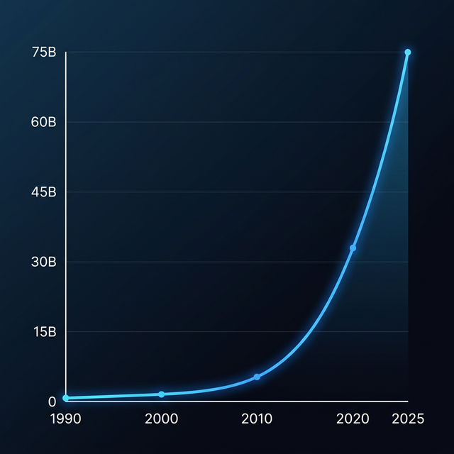
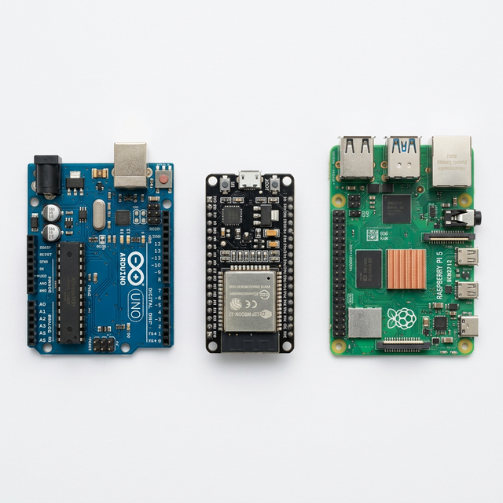

Internet Rzeczy (IoT) – Od koncepcji do Przemysłu 4.0
Od Automatu do Wszechobecności (Wykład 1)
prof. UPP dr hab. inż. Marek Urbaniak
Wydział Inżynierii Środowiska i Inżynierii Mechanicznej


Prolog: Pragnienie, które zrodziło cyfrowy ekosystem
1. Ewolucja: Od punktu do punktu
Zanim maszyny zaczęły rozmawiać autonomicznie, musieliśmy zbudować drogi.
- 1832: Baron Schilling konstruuje w Rosji pierwszy telegraf elektromagnetyczny. Zdefiniowało to komunikację punkt-punkt.
- 1844: Publiczne wiadomości telegraficzne kodem Samuela Morse’a.
- 1876: Patent Aleksandra Bella na telefon (komunikacja głosowa na odległość).
- 1955: Edward O. Thorp buduje pierwszy komputer ubieralny (wearable) do przewidywania ruletki.
- 1969: Uruchomienie sieci ARPANET (komutacja pakietów, fundament dzisiejszego Internetu).
2. Mit Założycielski: Pragnienie
Kawa, kod i chęć oszczędności czasu – od tego zaczął się IoT.
- Gdzie? Carnegie Mellon University (CMU), wydział informatyki.
- Kiedy? Rok 1982.
- Problem: Studenci pracujący po nocach schodzili piętro niżej po napoje do automatu z Coca-Colą.
- Często dowiadywali się na miejscu, że w automacie brakuje napojów.
Narodziny idei
„Zrobmy tak, żeby maszyna sama nam mówiła, czy jest sens do niej schodzić”.
3. Kevin Ashton i Toster (Lata 90.)
Od uczelnianych ciekawostek do potencjału komercyjnego.
Pierwsze urządzenie TCP/IP (1990)
- J. Romkey na konferencji Interop udowodnił potęgę stosu TCP/IP.
- Zdalnie sterowany toster kuchenny.
- Włączanie i wyłączanie odbywało się z użyciem Internetu.
- Jedna wada: człowiek musiał najpierw włożyć do niego chleb.
Narodziny Terminu “IoT” (1999)
- Kevin Ashton, Procter & Gamble (P&G).
- Analizował łańcuchy dostaw, poszukując przyczyny pustych półek ze szminkami Olay.
- Sformułował przełomową prezentację pt. „The Internet of Things”.
- Zidentyfikował technologię RFID jako klucz do autonomicznego śledzenia towarów.
3. Moment Zwrotny: Skala zjawiska
Prawdziwy IoT zaczyna się tam, gdzie człowiek przestaje być głównym twórcą danych.
- Czym jest IoT? To sieć składająca się z urządzeń posiadających unikalne identyfikatory (UID) potrafiących wymieniać dane autonomicznym strumieniem bez interakcji człowieka.
- Podział Urządzeń:
- Digital-first: Projektowane z myślą o sieci (laptopy, smartfony).
- Physical-first: Przedmioty fizyczne, stające się widoczne w sieci dzięki dołożonym mikroczipom (bramy wjazdowe, żarówki, pralki).
- Rok 2008 / 2009: Historyczny Rubikon.
- Wtedy po raz pierwszy liczba aktywnych, połączonych urządzeń przewyższyła całkowitą populację ludzi na Ziemi (moment zdefiniowany analizami Cisco).

Źródło: Cisco Annual Internet Report
Rozdział I: Anatomia „Cyfrowej Rzeczy”
4. Architektura Systemów IoT
Rozbicie abstrakcyjnego pojęcia „inteligentnego przedmiotu” na logiczne ramy (warstwy).
- Aby system działał, komunikacja musi posiadać hierarchiczną, 3-warstwową konstrukcję ustandaryzowaną przez IEEE.
- Jak układ nerwowy człowieka: czuje, przekazuje szybki impuls, analizuje go w mózgu.
- Powszechnie przyjęty model zakłada trzy filary:
- Percepcję (Czujniki i Aktuatory)
- Sieć (Bramy i Routing)
- Aplikację (Interfejsy i Analityka)
5. Schemat przepływu
Trzy warstwy to fundament – bez płynnego ruchu informacji w pionie, system paraliżuje się.
6. Warstwa Percepcji: Zmysły maszyny
Jak fizyka staje się sygnałem cyfrowym?
- Rodzaje “czucia”: temperatura, wilgotność, natężenie światła, gazy (VOC, CO2), ciśnienie, ruch (akcelerometry), wibracje, geolokalizacja (GPS).
- Klasyfikacja czujników:
- Pasywne (nie wymagają zasilania do detekcji – np. fotorezystor).
- Aktywne (emitują sygnał by zmierzyć odbicie, np. ultradźwięki, Lidar).
- Rola kalibracji (np. drift wskazań sensora, dryft zera).
Wady Świata Fizycznego
Środowisko naturalne niszczy sprzęt. Ekstremalne drgania na linii produkcyjnej zniszczą lutowane łącza szybciej niż jakikolwiek protokół przestanie mieć rację bytu.
7. Warstwa Percepcji: Aktuatory
Aby mieć wpływ na fizykę, system wykorzystuje aktuatory – elementy wykonawcze.
- Informacja zwrotna: Posiadanie dachu reagującego na burzę wymaga elementu domykającego włazy.
- Typy urządzeń wykonawczych:
- Elektryczne: przekaźniki półprzewodnikowe, serwomechanizmy, silniki krokowe, oświetlenie.
- Ciekłe/Gazowe: elektrozawory (kontrola nawadniania, upusty ciśnienia).
- Przepływ pracy (Pętla Sterowania):
- Pomiar → Decyzja w warstwie wyższej → Akcja Aktuatora.
8. Brama brzegu sieci (Edge Gateway)
Zjawisko izolacji i ochrony w sieciowych gardłach.
- Edge Computing “Brzeg sieci”: Odchodzimy od przesyłania wszystkich danych bezpośrednio do wielkiej chmury.
- Gateway staje się inteligentnym hubem: uczy się, filtruje, przesyła średnie agregaty (nie 10 milionów pakietów drgań na sekundę, tylko log “Stan Łożyska: Stabilny”).
Latency
Czas pokonania trasy danych od urządzenia do chmury obliczeniowej i z powrotem z komendą do urządzenia. Często jest krytyczny (np. hamowanie autonomicznych pojazdów), dlatego przenieśliśmy inteligencję blisko brzegu sieci (Edge).
Rozdział II: Narzędzia Twórców – Prototypowanie
9. Od pomysłu do wdrożenia
Złoty wiek IoT to zasługa drastycznego obniżenia bariery wejścia i skrócenia czasu od pomysłu do wdrożenia (Time To Market).
- Przed dekadą zaprojektowanie modułu testującego łączność to były miesiące testowania specjalistycznych płytek drukowanych PCB, analiz schematów Altium/Eagle.
- Zjawisko „Rapid Prototyping” (Szybkiego Prototypowania).
- Gotowe środowiska deweloperskie ustandaryzowały piny, uziemienia (GND), zasilania (VCC), porty wejścia-wyjścia cyfrowego (GPIO).
10. Platformy sprzętowe jako kamień węgielny
Wybór platformy zależy od poboru mocy i profilu radiowego.
Mikrokontrolery (MCU)
- Arduino: Klasyczne, edukacyjne, łatwy w przyswojeniu język C/C++. Brak łączności radiowej na samej płytce (trzeba dodatkowych tzw. shieldów).
- ESP32: Król taniego, profesjonalnego IoT. Układ SoC (System on Chip) z wbudowanym Wi-Fi i Bluetooth, a w trybie uśpienia pobiera zaledwie mikroampery.
Komputery (SBC)
- Raspberry Pi 5: To dosłownie PC. Uruchamia Linuksa.
- Przestarzałe względem roli czujnika, zbyt prądożerne (grzeje się, kilkanaście Wattów ciągłego obciążenia w piku).
- Właśnie na nim stawiamy lokalne serwery MQTT czy Edge Computing w domu.

11. “Deep Sleep” - czyli kompromis Mocy
Co to znaczy “Zasilane małą baterią na 3 lata”?
- Typowe moduły Wi-Fi zużywają setki miliamperów energii na samo przeszukiwanie sieci i zestawianie połączenia TCP/IP.
- Mikrokontrolery wykorzystują paradygmat: obudź procesor z głębokiego snu, wykonaj błyskawicznie zadanie (odczyt + nadanie pakietu) w ułamku sekundy i ponownie uśpij jednostkę.
- Procesor główny na płytce odcina sobie zasilanie, pozostawiając jedynie minimalny zegar czasu rzeczywistego (RTC) do wybudzenia (Ultra Low Power).
12. Digital Twins (Cyfrowy Bliźniak)
Ewolucja warstw abstrakcyjnych, wizualne odtworzenie hardware.
- Wirtualne odbicia połączonych systemów – cyfrowe kopie silników, przesyłek, pociągów, serwerowni, a nawet systemów wentylacyjnych szpitala.
- Pozwalają z dużym wyprzedzeniem, na podstawie danych historycznych, szukać słabych punktów w cyklu operacyjnym.
- Przemysłowe maszyny i hale poddawane są symulacjom stochastycznym (od scenariusza „co by było, gdyby pożar w rogu hali” po testowanie uszkodzenia konkretnego podzespołu).
Wirtualne prototypowanie
Zamiast zatrzymywać kosztowną linię produkcyjną na test nowego oprogramowania, uruchamia się kod na Cyfrowym Bliźniaku, widząc odpowiedź czujników symulowaną z wysoką wiernością matematyczno-fizyczną w chmurze.
13. Zestawienie: Arduino vs ESP vs Raspberry Pi
Trzy kompletnie różne światy, często błędnie wrzucane do jednego worka.
| Parametr | ESP32 | Arduino Uno | Raspberry Pi 5 |
|---|---|---|---|
| Typ układu | Mikrokontroler (SOC) | Mikrokontroler | Komputer (SBC) |
| System Operacyjny | Brak / RTOS | Brak | Linux |
| Pobór prądu / Zasilanie | Bardzo niskie (Bateria, uśpienie w \(\mu A\)) | Niskie (mA) | Wysokie (Sieciowe stałe, piki Watowe) |
| Wbudowane Radio | Tak (Wi-Fi, Bluetooth) | Nie (Wymaga “Shieldów”) | Tak (Wi-Fi, Bluetooth, Ethernet) |
| Główne zastosowanie | Autonomiczne Czujniki Terenowe | Proste prototypy edukacyjne | Lokalna Brama (Gateway) koordynująca |
14. Podsumowanie
W tym wykładzie poznaliśmy podstawy: jak fizyczny przedmiot otrzymuje tożsamość (UID) i zmysły (czujniki/aktuatory).
Omówiliśmy rolę bramek brzegowych (Gateway) i przetwarzania na krawędzi sieci (Edge Computing).
Zrozumieliśmy, że mały błąd na warstwie percepcyjnej wywołuje lawinę błędnych algorytmów w warstwie końcowej analizy.
Dziękuję za uwagę.
Internet Rzeczy – IoT (Wykład 1)